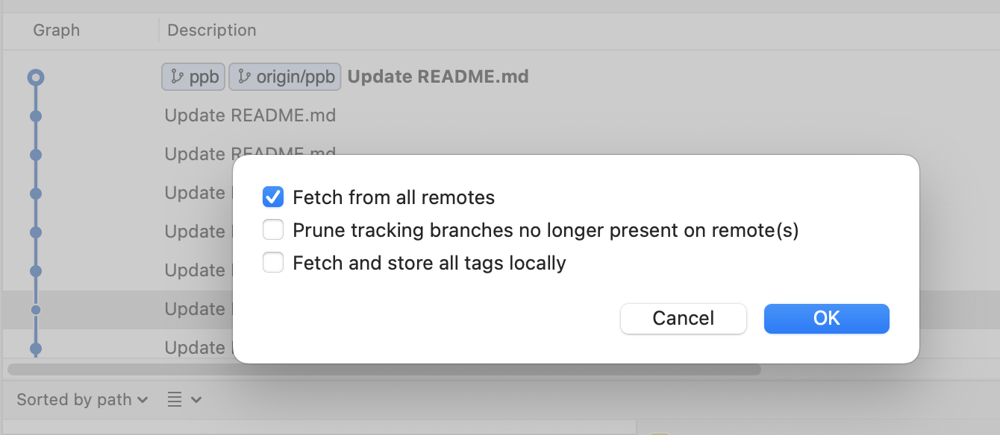

又來填坑啦。
指令
先把遠端最新的進度抓下來（是進度不是檔案）
1 | git fetch |
切換到想要同步的分支
1 | git checkout <branch-name> |
合併
1 | git merge origin/<branch-name> |
這樣子那個分支的檔案就會跟遠端是同步的狀態了。
Source tree
- 先 fetch 遠端的進度

- 看到更新的進度後，把他 merge 到你想要的分支上
這樣就搞定了。
關於 fetch 與 pull（原理）
簡單來說，我們要讓進度同步主要需要兩個條件：
- 取得進度
- 把最新進度跟原始進度做合併
所以我們平常在用 pull origin master 的意思其實是：
1. 先把最新進度抓下來（是進度不是檔案）
1 | git fetch <remote>（如果你有很多個才需要特別指定） |
2. 合併到我目前的分支（注意是用斜線分隔）
1 | git merge origin/master |
所以合起來才會是：
1 | git pull origin master |
這個就是 fetch 跟 pull 的差別，希望能幫助自己釐清關於分支的疑惑。